Minecraft on Mojang Studios välja töötatud 3D open-world sandbox mäng, kus mängija võib suhelda plokkidest ja elukatest koosneva keskonnaga.
Praegu on 4 hooldatud versiooni: Java Edition, Bedrock Edition, Education Edition ja China Edition. Aga siin meie jutustame Java versioonist.
Selleks, et mängu alustada, on vaja luua oma maailma. Seda saab teha järgmiselt: Singleplayer -> Create New World
Nüüd, kui meil on juba maailm loodud, võime mängima hakkata. Minecraftis on kaks peamist bossi: Wither ja The Ender Dragon ja selleks, et mängu läbida, pead neid võita.
Alustame ressursside korjamisest. Esiteks on vaja puid leida. Puudest saab valmistada esimesed tööriistad ja töölaua.
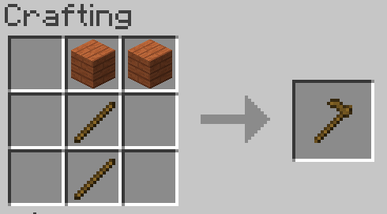 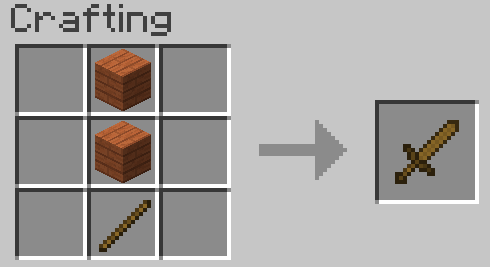 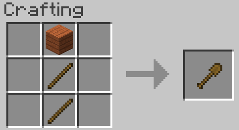 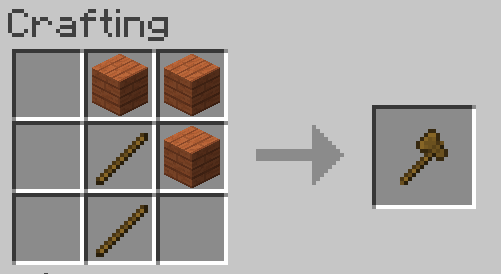 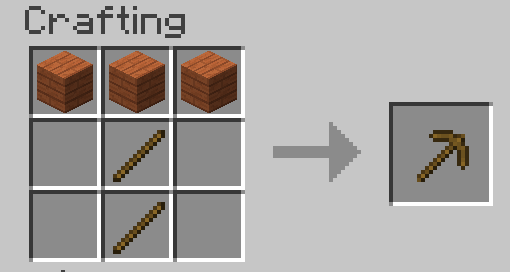 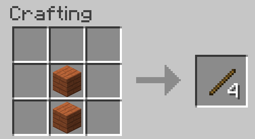 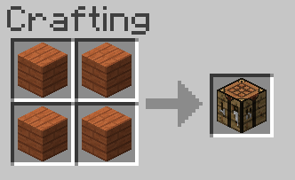Tööriistu teistest materjalidest valmistatakse samamoodi.
Kokku võib olla puust, kivist, rauast, kullast ja teemandist tööristad. Viimaste bossidega võitlemiseks on kindlasti vaja parimaid.
Kivi kaevamiseks on vaja puutööriistu, raua jaoks kivist, kulla jaoks rauast ning teemandi jaoks piisab rauast valmistatud kirkast.
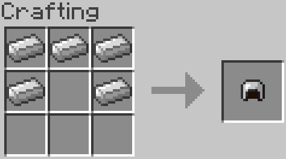 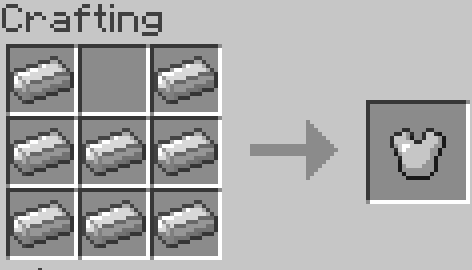 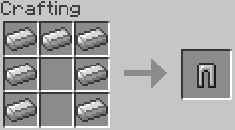 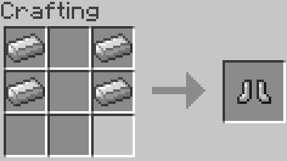Turvis saab olla nahast, rauast, kullast ja teemandist ning valmistatakse niimoodi:
Meisterdamisest räägitakse täpsemalt siin.